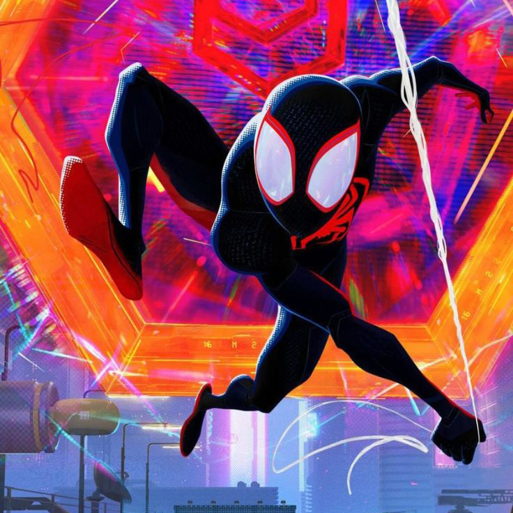
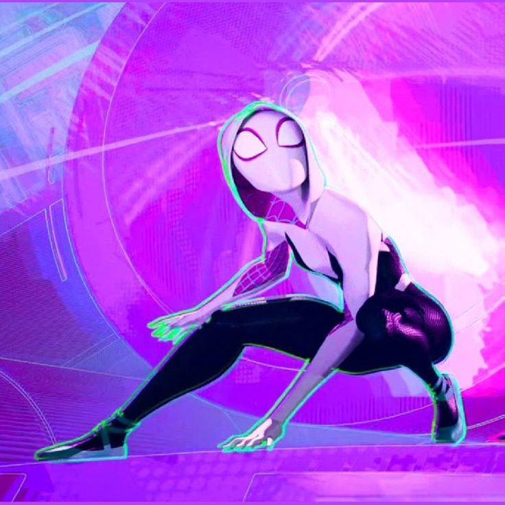
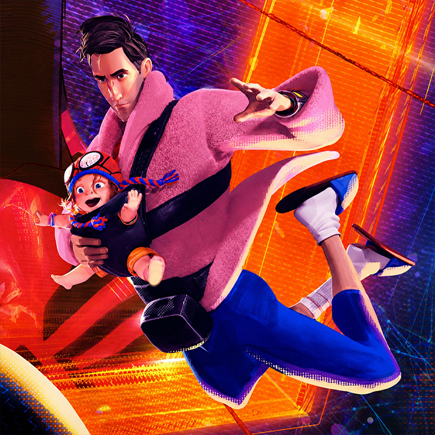

Peliculas, personajes y datos sobre la saga que cambio la industria de la animación
El Spider-Verse (o Multiverso Arácnido) es un concepto de Marvel Comics que reúne a todas las versiones y variantes de Spider-Man de diferentes universos paralelos en una misma historia. Nació como un gran evento en los cómics de 2014 y se popularizó globalmente con las películas animadas de Sony protagonizadas por Miles Morales.
DATO CLAVE
La primera entrega de 2018 ganó el Premio Óscar a la Mejor Película de Animación, rompiendo una racha de varios años de victorias consecutivas de los estudios Disney y Pixar.
Spider-Man: Into the Spider-Verse
2018
Miles Morales es picado por una araña radiactiva y debe asumir el rol de héroe tras la muerte de Peter Parker. Con la ayuda de cinco variantes arácnidas llegadas de otras dimensiones, Miles aprende a dominar sus poderes para detener una máquina que amenaza con destruir el multiverso.
Spider-Man: Across the Spider-Verse
2023
Miles se reencuentra con Gwen Stacy y viaja por el multiverso, donde descubre a una gigantesca sociedad de héroes arácnidos. Sin embargo, al negarse a aceptar una tragedia familiar obligatoria en su destino, Miles entra en conflicto con el líder del grupo y desata una persecución interdimensional.
Spider-Man: Beyond the Spider-Verse
2027 - Próxima a estrenarse
En esta conclusión de la saga, Miles debe escapar de una realidad alternativa peligrosa y detener al caótico villano The Spot. Al mismo tiempo, Gwen Stacy lidera un equipo de rescate para encontrarlo antes de que las fuerzas de la sociedad arácnida lo capturen.

Miles Morales
El protagonista; un adolescente de Brooklyn que hereda el traje de Spider-Man y tiene el poder de volverse invisible y lanzar descargas eléctricas.

Gwen Stacy
La mejor amiga de Miles; una ágil heroína de otra dimensión que toca la batería y lidera el equipo de rescate.

Peter B. Parker
El mentor de Miles; una versión adulta, divertida y descuidada del Spider-Man clásico que luego se convierte en papá.